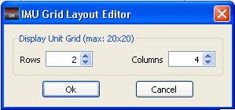
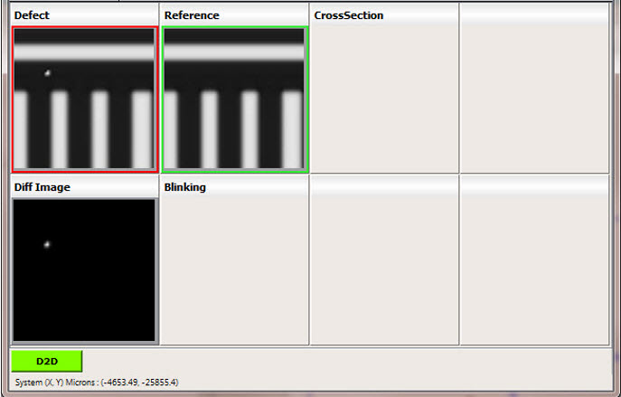
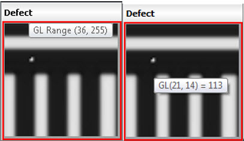

Individual display
units are shown in a grid in the IMU window. The number of rows
and columns displayed in the IMU window can be reconfigured through
the EDIT button located in the IMU window toolbar.
Procedure
- In the IMU window toolbar,
click the EDIT button (the green four-square icon). This invokes
the IMU Grid Layout dialog box.
Figure 1. IMU Grid Layout Editor
Dialog Box
- In the IMU Grid Layout dialog
box, select the number of rows and columns you wish to apply to
the layout of the IMU.
- Click OK. The layout of the IMU window
changes based on the number of rows and columns you specified.
Examples
If
you selected the number of rows as 2 and the number of columns as
4 (as shown in Figure 1), then the layout is redrawn in the
IMU window as shown in Figure 2.
Figure 2. Grid Configuration
Example (2 x 4 Display)
Note: The gray
level (GL) values are displayed as tool tip when the mouse pointer
is hovered over the image as shown in the Figure 3. For more details on GL values, refer
to the section “Viewing a Gray Level Matrix”.
Figure 3. Tool Tip on Image